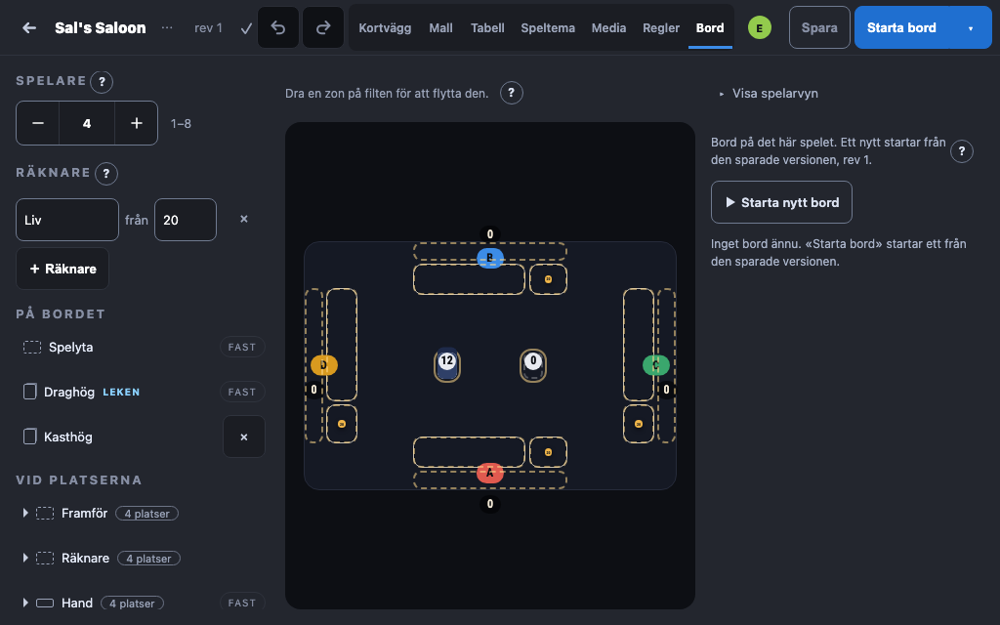
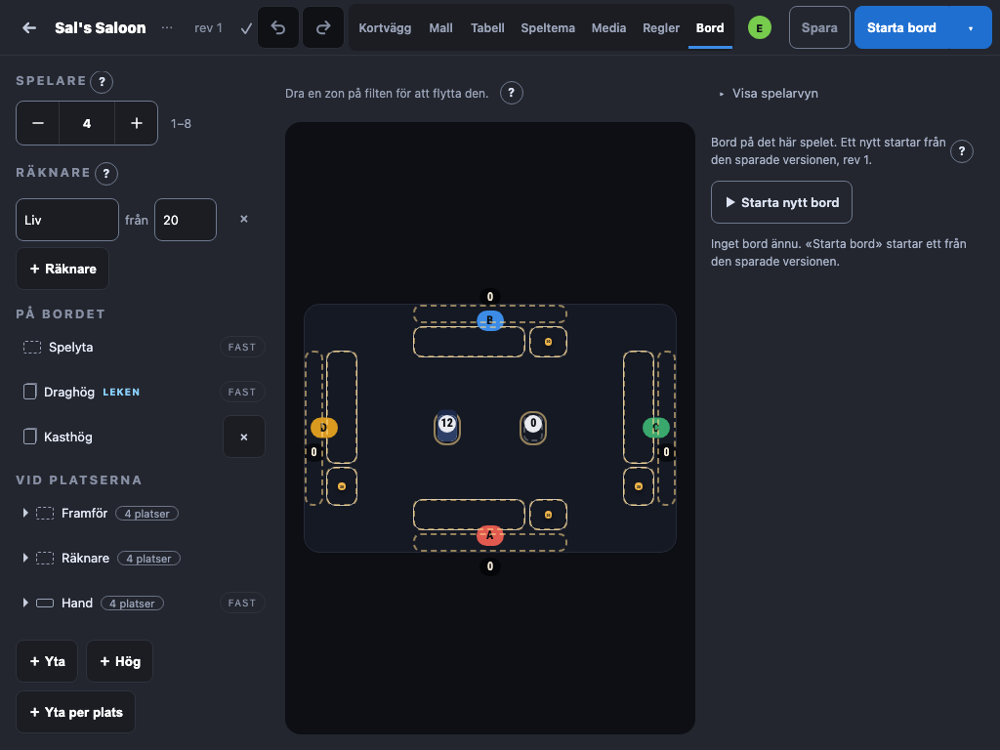
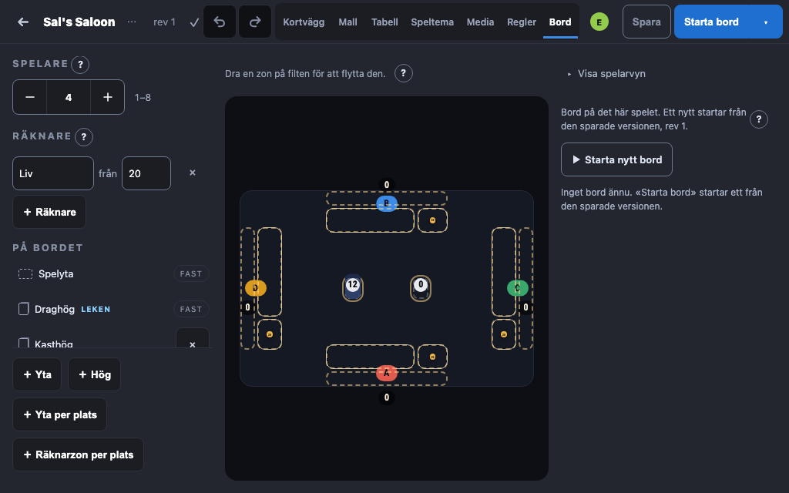
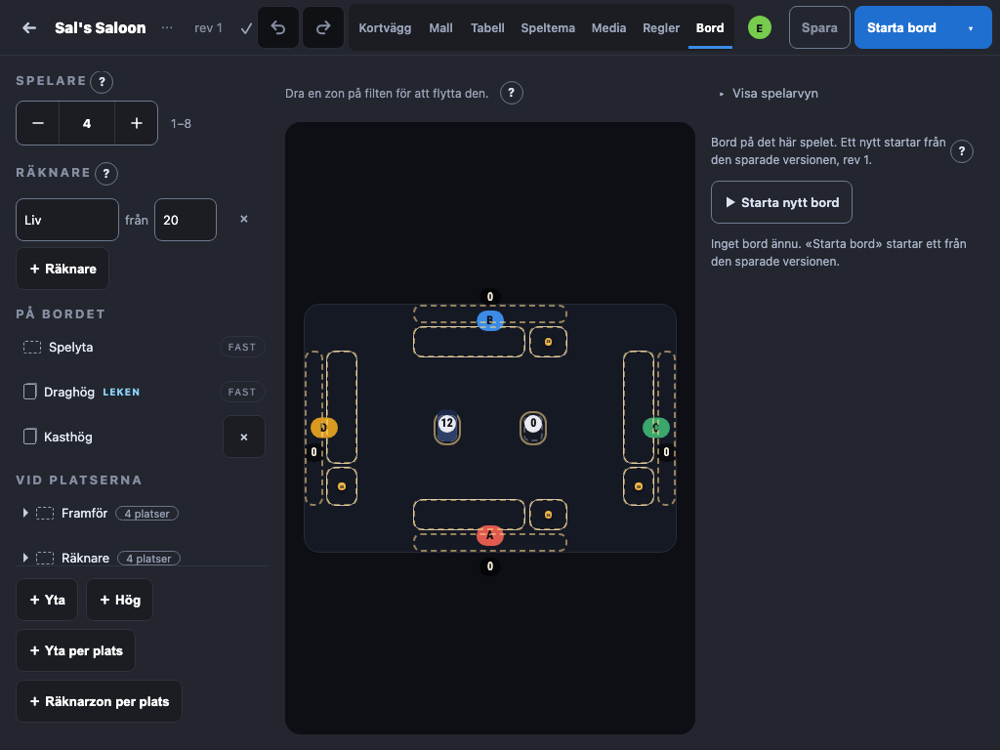
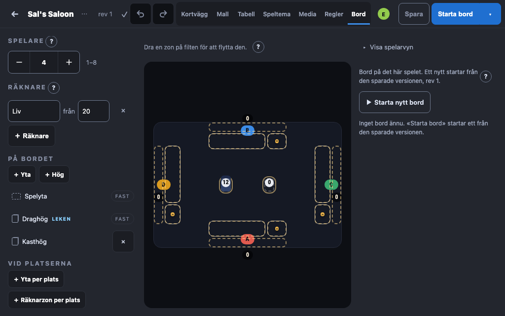
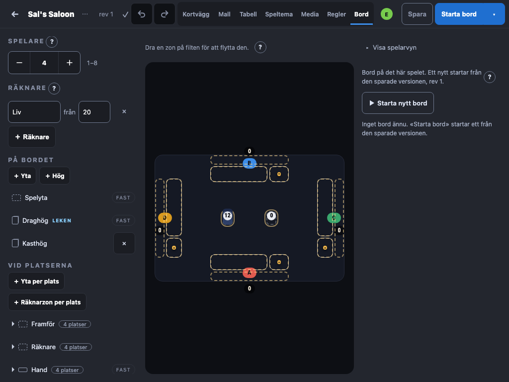
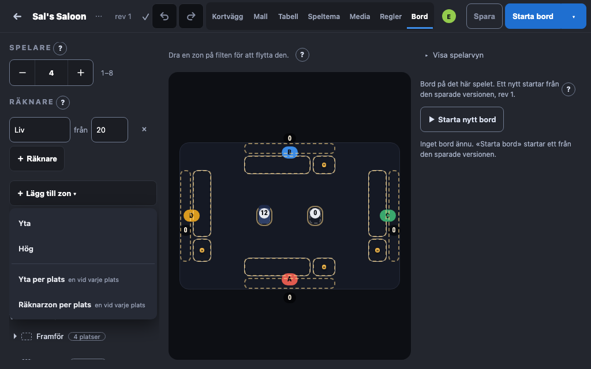
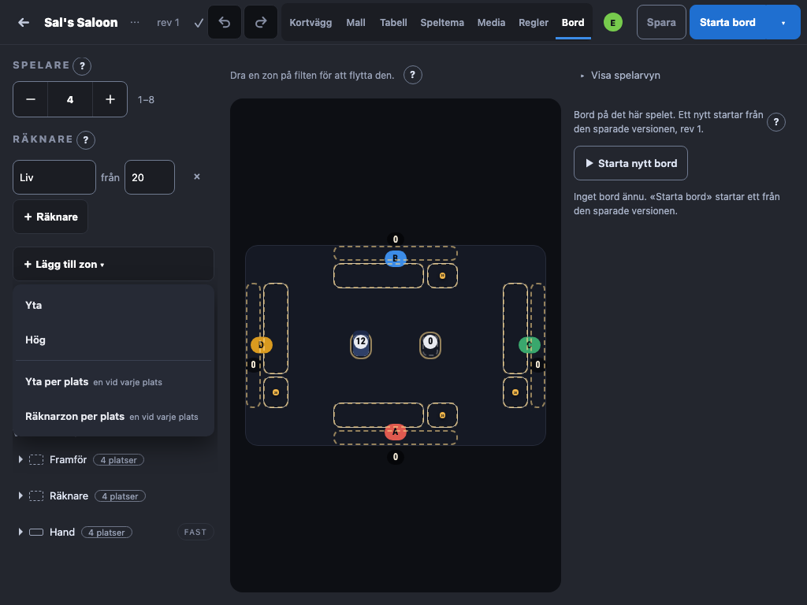

Bord-flikens kolumn: var «＋ Yta / Hög / …» står (#711)
Den byggda appen, Sal's Saloon med fyra platser, vid 1024 × 640 (vänster) och 1024 × 768 (höger).
I dag
Knapparna står sist i kolumnen. Vid 1024 × 640 syns ingen av dem utan att kolumnen rullas, och inget säger att den rullar.


A — fast i kolumnens fot
Knapparna står kvar längst ned medan listan rullar bakom dem. Syns alltid, oavsett hur många zoner spelet har, men tar ~170 px av en 640 px hög kolumn.


B — under sin grupps rubrik (rekommenderad)
«＋ Yta» och «＋ Hög» står under «På bordet», «＋ Yta per plats» och «＋ Räknarzon per plats» under «Vid platserna» — knappen står där det den skapar hamnar. Kostar ingen höjd, men den andra gruppens knappar glider ned när första gruppen får fler zoner.


C — en knapp, «＋ Lägg till zon ▾»
En knapp överst i zonlistan som öppnar de fyra. Minst plats, men ett tryck till, och en meny.

